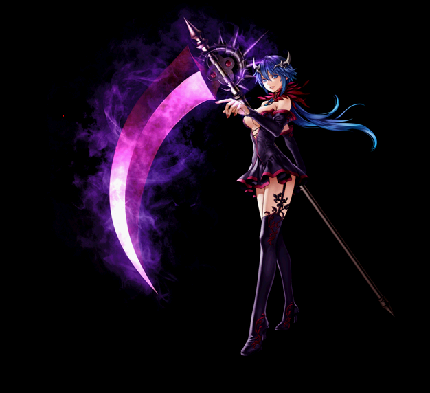
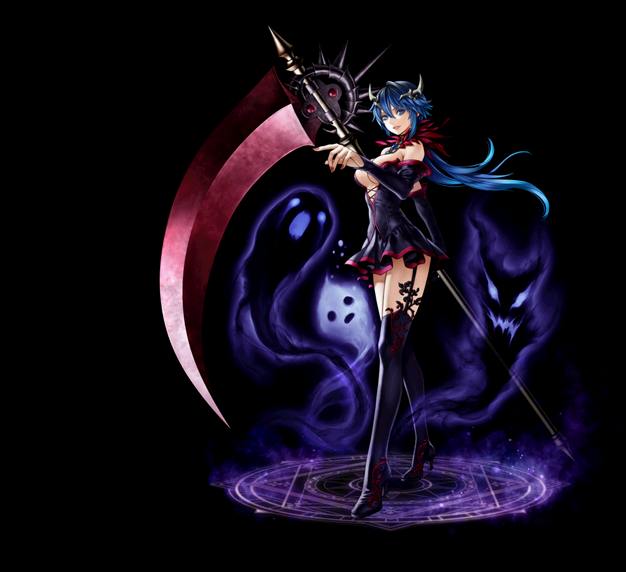
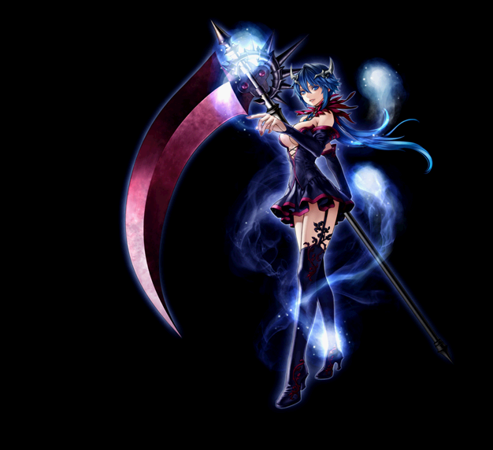

2020/2/19～ 霊術師 スキル一覧
2020/02/19 状態異常に伴うスキル改変後のデータ。
[通常スキル]
シャーマンオブウィンド
ソウルコントローラー
スピリットインプリケイショナ
シャーマンオブウィンド
| シャーマンオブウィンド | |||||||
|---|---|---|---|---|---|---|---|
|  | |||||||
| [専用パッシブ] 風刃の舞 | |||||||
| スキル説明 |
覚醒スキルで攻撃した敵に追加被害を与える。風の刃は毎秒ごとに物理攻撃の一定数値だけ風ダメージを与える。 |
||||||
| スキル効果 |
特定スキルで攻撃した対象に10秒間、基本物理攻撃力の50％相当の風ダメージ。 クリティカルと強打にも適用。 |
||||||
 |
[専用覚醒スキル] 大嵐斬り | |||||||
|---|---|---|---|---|---|---|---|---|
| スキル難易度 | 5 | |||||||
| 必要スキル | 嵐斬り[50] |
|||||||
| スキル説明 | 吹き荒れる刃の竜巻を起こし、敵を閉じ込めて切り裂く。追加で短時間の間、自身の回避率が上昇する。 | |||||||
| レベル | 0 | 1 | 2 | 3 | 4 | 5 | ... | 50 |
| 消費CP | 355 | 360.5 | 366 | 371.5 | 377 | 382.5 | ... | 630 |
| 獲得CP | 200 | 203 | 206 | 209 | 212 | 215 | ... | 350 |
| 物理ダメージ(％) | 240% | 245% | 250% | 255% | 260% | 265% | ... | 490 |
| 攻撃回数 | 11回 | |||||||
| 風属性攻撃 | 186～226 | 188.5～228.5 | 191～231 | 193.5～233.5 | 196～236 | 198.5～238.5 | ... | 311～351 |
| 硬直確率(％) | 削除 | |||||||
| 硬直時間(秒) | 削除 | |||||||
| 引き射程距離(m) | 3.03 | 3.06 | 3.09 | 3.12 | 3.15 | 3.18 | ... | 4.5 |
| 持続時間(秒) | 3秒 | |||||||
| 攻撃速度(秒) | 3秒 | |||||||
| 回避率(％) | 100% | |||||||
| 回避上昇時間(秒) | 3秒 | |||||||
| クールタイム | 2秒 | |||||||
| 備考1 | ノックバック抵抗で抵抗可能。カリスマを上げると麻痺確率が上昇する。 | |||||||
| 備考2 | 敵の攻撃無視 | |||||||
| 備考3 | 遠距離範囲型スキル、攻撃範囲・引き寄せ距離に上限あり | |||||||
 |
竜神昇 | |||||||
|---|---|---|---|---|---|---|---|---|
| スキル難易度 | 3 | |||||||
| 必要スキル | 竜巻起こし[50] |
|||||||
| スキル説明 | 鎌で突風を起こして、敵を巻き込みより強力なダメージを与える。 | |||||||
| レベル | 0 | 1 | 2 | 3 | 4 | 5 | ... | 50 |
| 消費CP | 105 | 106.5 | 108 | 109.5 | 111 | 112.5 | ... | 180 |
| 獲得CP | 79 | 80.5 | 82 | 83.5 | 85 | 86.5 | ... | 154 |
| 物理攻撃力(％) | 100% | 105% | 110% | 115% | 120% | 125% | … | 350% |
| 風属性攻撃力 | 142～148 | 144.5～150.5 | 147～153 | 149.5～155.5 | 152～158 | 154.5～160.5 | … | 267~273 |
| 爆発半径(m) | 4 | 4.03 | 4.06 | 4.09 | 4.12 | 4.15 | … | 5.5 |
| 攻撃間隔(秒) | 1秒 | |||||||
| 攻撃回数 | 3回 | |||||||
| 備考1 | ノックバック抵抗で抵抗可能。敵を2.5m引き寄せる。攻撃速度1.00秒 | |||||||
| 備考2 | 敵の攻撃無視 | |||||||
 |
鬼斬り | |||||||
|---|---|---|---|---|---|---|---|---|
| スキル難易度 | 2 | |||||||
| 必要スキル | 必殺斬り[50] |
|||||||
| スキル説明 | 敵の弱点を狙って致命打を与える。従来より成功確率が上昇。 | |||||||
| レベル | 0 | 1 | 2 | 3 | 4 | 5 | ... | 50 |
| 消費CP | 91.5 | 93 | 94.5 | 96 | 97.5 | 99 | … | 166.5 |
| 獲得CP | 26 | 26.5 | 27 | 27.5 | 28 | 28.5 | … | 51 |
| 物理ダメージ(％) | 400% | 406% | 412% | 418% | 424% | 430% | … | 700% |
| 命中率補正値(％) | 50% | |||||||
| クリティカル補正値(％) | 200% | |||||||
| 攻撃速度 | 武器速度 | |||||||
| 備考 | 運に基づいて一定確率でダブルクリティカル発生 | |||||||
ソウルコントローラー
| ソウルコントローラー | |||||||
|---|---|---|---|---|---|---|---|
|  | |||||||
| [専用パッシブ] 魂の楔 | |||||||
| スキル説明 |
散らばっている魂を拘束して常にアセンブル状態を維持する。 |
||||||
| スキル効果 |
常に「アセンブル」状態になる。 (魂爆発) 15%の確率で物理攻撃の150%のダメージが入る。 ※クリティカル・強打を含むと、そのダメージは限界突破する。 |
||||||
 |
[専用覚醒スキル] ソウルカタストロフィ | |||||||
|---|---|---|---|---|---|---|---|---|
| スキル難易度 | 5 | |||||||
| 必要スキル | 魂の暴走[50] |
|||||||
| スキル説明 | 魂を崩壊させて発生したエネルギーを吸収し、攻撃速度及び移動速度を増加させる。また、すべてのスキルを消費CP無しで使用可能になる。「アセンブル」状態でのみ使用可能。解放効果状態で使うと再使用時間が短縮される。 | |||||||
| レベル | 0 | 1 | 2 | 3 | 4 | 5 | ... | 50 |
| 消費CP | 175 | 177.5 | 180 | 182.5 | 185 | 187.5 | ... | 300 |
| 獲得CP | 0 | 0 | 0 | 0 | 0 | 0 | ... | 0 |
| 持続時間(秒) | 35秒 | |||||||
| 攻撃速度(％) | 29.50% | 30.50% | 31.50% | 32.50% | 33.50% | 34.50% | ... | 79.50% |
| 移動速度(％) | 80.50% | 82% | 83.50% | 85% | 86.50% | 88% | ... | 155.50% |
| 魂爆発発動確率 | 25% | |||||||
| クールタイム(秒) | 60秒 | |||||||
| 魂解放時クールタイム(秒) | 40秒 | |||||||
 |
フルリバレイト | |||||||
|---|---|---|---|---|---|---|---|---|
| スキル難易度 | 2 | |||||||
| 必要スキル | リバレイト[50] |
|||||||
| スキル説明 | 束縛された魂を解放し、従来よりも長時間、すべての能力を上昇させる。 | |||||||
| レベル | 0 | 1 | 2 | 3 | 4 | 5 | ... | 50 |
| 消費CP | 160 | 163 | 166 | 169 | 172 | 175 | ... | 310 |
| 獲得CP | 51 | 52 | 53 | 54 | 55 | 56 | ... | 100 |
| 全ての能力値増加 | 14.90% | 15% | 15.10% | 15.20% | 15.30% | 15.40% | ... | 19% |
| 持続時間(秒) | 90 | 91 | 92 | 93 | 94 | 95 | ... | 140 |
| 魔法クリティカル増加 | 8% | |||||||
| 物理強打 | 8% | |||||||
 |
稲妻乱斬り | |||||||
|---|---|---|---|---|---|---|---|---|
| スキル難易度 | 4 | |||||||
| 必要スキル | 乱斬り[50] |
|||||||
| スキル説明 | 鎌で敵をより強く無差別に斬りつけ攻撃する。従来よりダメージ増加。ターゲットを攻撃している間は移動可能。 | |||||||
| レベル | 0 | 1 | 2 | 3 | 4 | 5 | ... | 50 |
| 消費CP | 205 | 208.5 | 212 | 215.5 | 219 | 222.5 | ... | 380 |
| 獲得CP | 160 | 163 | 166 | 169 | 172 | 175 | ... | 310 |
| 物理ダメージ(％) | 75% | 77.50% | 80% | 82.50% | 85% | 87.50% | ... | 200% |
| 連打回数(Max11回) | 8 | 8.1 | 8.2 | 8.3 | 8.4 | 8.5 | ... | 11 |
| 攻撃速度 | 武器速度 x 400% | |||||||
| 備考 | ターゲットを攻撃している間も移動可能。 | |||||||
スピリットインプリケイショナ
| スピリットインプリケイショナ | |||||||
|---|---|---|---|---|---|---|---|
|  | |||||||
| [専用パッシブ] 戦闘部族の秘術 | |||||||
| スキル説明 |
戦闘部族の秘術を使用して持続ダメージが適用されるまでの間CPを回復し続ける。魂の侵食・魂の繋縛のクールタイムが減少する。 |
||||||
| スキル効果 |
持続ダメージが発生している間、CPを1発ごとに20回復。 魂の侵食・魂の繋縛のクールタイムが1秒減少します。 |
||||||
 |
[専用覚醒スキル] ソウルバーン | |||||||
|---|---|---|---|---|---|---|---|---|
| スキル難易度 | 5 | |||||||
| 必要スキル | ソウルブレイズ[50] |
|||||||
| スキル説明 | 魂を燃やす火の霊を召喚する。一定時間毎に強くなる火の霊が、敵にダメージを与える。火の霊が消える瞬間、かかっていたすべての魔法が消える。従来より発動確率が増加しダメージを与える周期が短くなる。 | |||||||
| レベル | 0 | 1 | 2 | 3 | 4 | 5 | ... | 50 |
| 消費CP | 150 | 152 | 154 | 156 | 158 | 160 | ... | 250 |
| 獲得CP | 75 | 76 | 77 | 78 | 79 | 80 | ... | 125 |
| 攻撃範囲 | 4.0m | 4.05m | 4.10m | 4.15m | 4.20m | 4.25m | ... | Max6.0m |
| 最大打撃人員 | 8 | 8.1 | 8.2 | 8.3 | 8.4 | 8.5 | ... | 13 |
| 発動確率(％) | 100% | |||||||
| 火抵抗低下(%) | 20% | |||||||
| 持続時間(秒) | 20秒 | |||||||
| 周期(秒) | 1秒(合計20発攻撃) | |||||||
| 上限 | 範囲は最大6m、15人まで適用 | |||||||
| 火ダメージ基礎 | 577 | 587 | 597 | 607 | 617 | 627 | ... | 1077 |
| 備考1 | 呪い抵抗で抵抗可能。カリスマ数値によりスキル成功確率が上昇する。 | |||||||
| 備考2 | ビショップのヒーリング/フルヒーリング/パーティーヒーリング、ウィザードのアースヒールを受けると、治癒される。 | |||||||
| 備考3 | 敵の攻撃無視、攻撃速度：武器速度 | |||||||
 |
ソウルテイナー | |||||||
|---|---|---|---|---|---|---|---|---|
| スキル難易度 | 1 | |||||||
| 必要スキル | ソウルプランナー[50] |
|||||||
| スキル説明 | 相手のCPを略奪して自分のCPにする。知識が高いほど、多くのCPを略奪することができる。相手のCPがマイナスの場合、略奪失敗となる。従来より射程距離が増加し攻撃速度が上昇。 | |||||||
| レベル | 0 | 1 | 2 | 3 | 4 | 5 | ... | 50 |
| 消費CP | 30 | 30.5 | 31 | 31.5 | 32 | 32.5 | … | 55 |
| 略奪CP | 削除 | |||||||
| 獲得CP | 17 | 17.3 | 17.6 | 17.9 | 18.2 | 18.5 | … | 32 |
| 物理ダメージ(％) | 削除 | |||||||
| 闇ダメージ | 247～255 | 257～265 | 267～275 | 277～285 | 287～295 | 297～305 | … | 747～755 |
| 攻撃間隔 | 1秒 | |||||||
| 持続時間 | 15秒 | |||||||
| キャスティング速度 | 武器速度 | |||||||
| 命中率(%) | 武器命中率 | |||||||
| 射程距離(m) | 5m | |||||||
| 備考 | 知識値の影響を受けます。 与えた闇ダメージに比例した追加闇ダメージを与えます。 |
|||||||
 |
魂の繋縛 | |||||||
|---|---|---|---|---|---|---|---|---|
| スキル難易度 | 3 | |||||||
| 必要スキル | 魂の侵食[50] |
|||||||
| スキル説明 | 敵の魂に地獄の雄叫びを浴びせることで恐怖の世界に包み込み、思考と反対の行動をさせる。恐怖の世界に包まれると動くことができなくなる。従来よりクールタイム減少。 | |||||||
| レベル | 0 | 1 | 2 | 3 | 4 | 5 | ... | 50 |
| 消費CP | 150 | 152 | 154 | 156 | 158 | 160 | ... | 250 |
| 獲得CP | 0 | 0 | 0 | 0 | 0 | 0 | ... | 0 |
| 火ダメージ | 450～550 | 460～560 | 470～570 | 480～580 | 490～590 | 500～600 | … | 950～1050 |
| 闇ダメージ | 200～350 | 212～362 | 224～374 | 236～386 | 248～398 | 260～410 | … | 800～950 |
| 範囲 | 3m | |||||||
| 持続時間(秒) | 10秒 | |||||||
| クールタイム(秒) | 10秒 | |||||||
| 備考 | 持続ダメージを無効にすると、処理されたダメージに比例して追加ダメージを与える。 ソウルバーン・ソウルテイナーにのみ有効。 |
|||||||
[参考]公式サイト